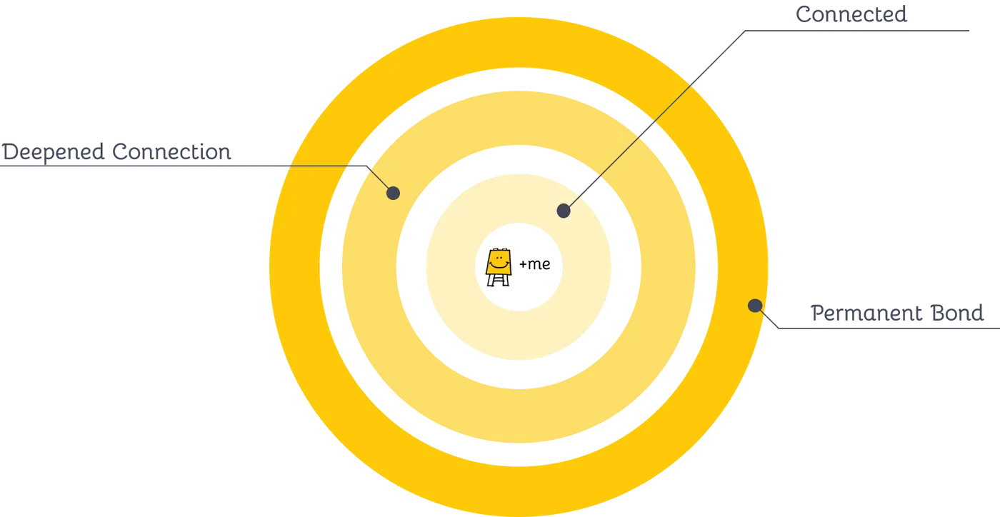
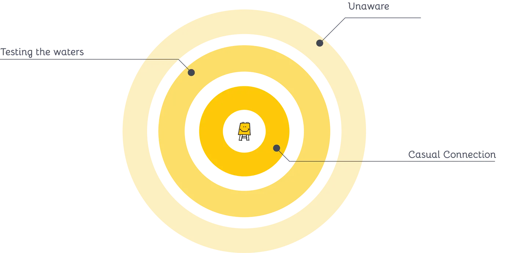

How do you find the moments that make your people fall in love — and how do you replicate them when circumstances change?
Our client was the large nonprofit, PrathamUSA, who saw a catastrophic drop in donations in 2020 and going into 2021 — with fundraising galas eviscerated and many of the $2,000–$10,000 donors with them. These donors were the feeder source of Pratham's super-committed, $10,000+ donors, and a few years without them would hurt the organization for years to come.
We engaged with Pratham on this problem to determine what brought donors in at different levels, what caused them to increase their donations, and what could be done to re-create the donor journey in the new post-2020 world.
Donor Research
Process Creation
Information Flow
USA50–100 employees$50M nonprofit
first — a shared language
Creating and visualizing the donor journey
How do you build a shared language? The first challenge was to find a way to communicate about different kinds of donors — outside of Pratham's traditional groupings by annual giving. We captured the 6 stages of the donor journey as an inward and then outward journey, created through semi-structured interviews with staff and donors and informed by ideas from the marketing post-purchase funnel.

validated curiosity brought donors to consider Pratham, while alignment with their goals brought them to form a connection

for connected donors, site visits to schools in India pushed them to deepen their connection — leading to permanent bonds, a stage which included many donors at the $100K+ annual level
↓ then — but why is it broken?
mapping the breakdown
But why is it broken?
Despite the clarity of the donor model, many of the insights were already known to Pratham's leadership. So why was the donor journey breaking? Through donor surveys and conversations, we uncovered large disparities in how similar situations were handled across the organization. Visualizing the flow of information made the discrepancies visible — and fixable.
Incoming information
Source:
Donor-specific signals
Chapter & city updates
PUSA updates
Pratham updates
Transformation & selection of medium
The marketing team transforms the information into a form that can be sent out.
Output to donor
Donor receives an email
Donors view a social-media post
Donors get a call or meeting
information that reached donors was often filtered by chapter leaders — leading to many variations across chapters
initial understandings failed to account for the dramatic retention differences between sources — calls or visits being far more memorable
↓ then — talk to the people who actually give
where insight actually lives
Speaking to your users will always generate insights
Pratham had a robust system for talking to high-value donors, but very few ways for those insights to reach leadership. In one example, Pratham had concluded that long-form publications were of little value — views were abysmal, the annual report's email open rate was low.
By talking to users, we found that those who did engage with long-form publications were more likely to draw closer to Pratham. The challenge wasn't to cut costs by reducing them — it was to invest in driving more readership in the right donor groups.
What do people take away from engaging with long-form publications?
People feel more connected to India
People like the simplicity of the idea of education (cause and effect); paying it forward for education
People like being part of the team that is winning
People give because their social circle also does — get social status, find like-minded people
Survey result
People who value Pratham's long-form publications tend to be higher-value donors.
touchpoints are not the same — surfacing the impact on the donor allows for accurate conclusions about efficacy, avoiding bias from # of views or clicks
insight emerged: higher-value, poorly-scalable experiences were key to forming the highest-value relationships with donors